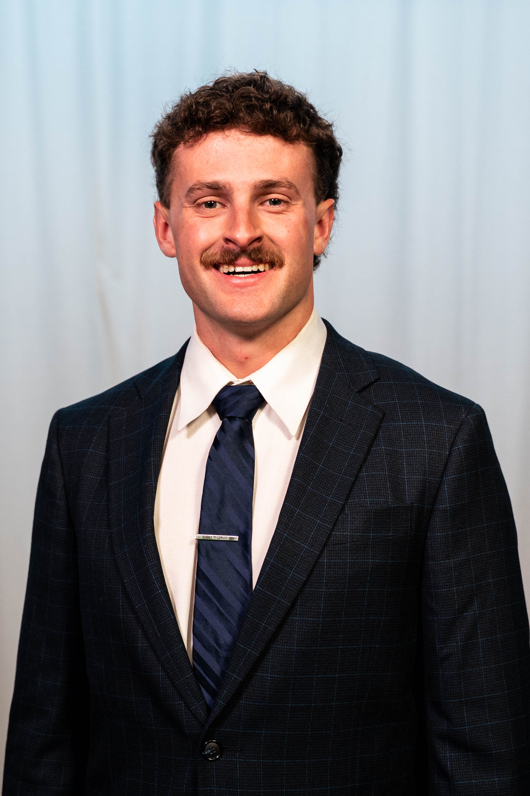
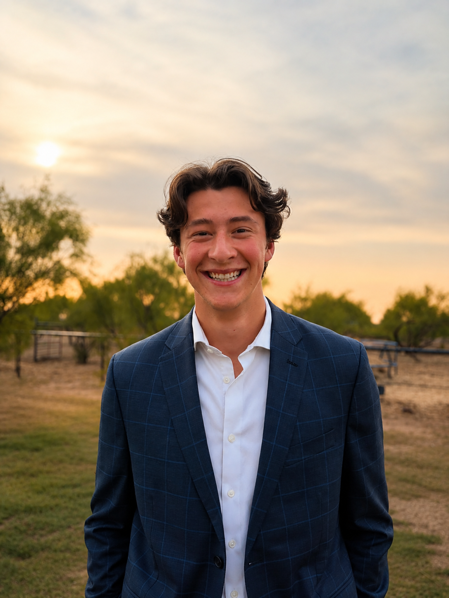

Hayden Harms
Co-founder
View Bio →

Landon Lindsey
Co-founder
View Bio →
Drew Wigley
Co-founder
View Bio →


Information is moving faster than ever, and we know business owners can't wait on deadlines from other people. HLW exists to adapt to the bottlenecks as they occur in real time.
We understand that business owners need accurate real-time insight into their operations, and the current services can't offer that. We also understand that individual operators don't just want a return filed, they want a partner to deliver insights.
We see a need for dedicated services, that understand your operations intimately, and is ready to move as fast as you are. That is why we founded HLW Financial.
[DRAFT] Transactions are categorized as they clear. The close happens continuously, so nothing has to be pieced back together months later.
[DRAFT] One advisor sees both sides of a founder's finances — no re-explaining context between a bookkeeper and a separate tax preparer.
[DRAFT] Every engagement comes through an introduction. That's a constraint we've chosen, not a limitation we're working around.
[DRAFT] Three founding partners, CPA-track, hands-on with every client. That's the model — not a phase we grow out of.
[DRAFT] We treat every engagement with the care we'd want for our own finances — because for founding clients, it often is.
[DRAFT] We're taking a limited number of clients at a discount in exchange for real feedback on the tools and workflows we're building.